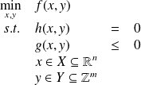

Optimisation structurelle des réseaux de chaleur
Remarque :
Un système énergétique complet (conversion, transport, stockage) est très complexe à maîtriser, et de fait, très difficile à optimiser.
Une fois ce constat effectuer, il n’empêche que les grands défis à relever pour 2050 passent forcément par cette optimisation.
Il est clair qu'en raison de l'ampleur des enjeux, les responsables ne pourront plus prendre de décisions hâtives ou justifier un choix d'attribution fondé sur un raisonnement instinctif ou des calculs naïfs. Afin de résoludre de ce type de problèmes, il est nécessaire de connaître les méthodes approuvées ainsi que de maîtriser les outils mathématiques et informatiques développés à cet effet.
Les méthodes proposées pour résoudre les problèmes évoqués ici sont nombreuses, mais peuvent toutes se résumer à l'énoncé mathématique suivant :
maximiser ou minimiser une fonction numérique de variables binaires ou continues, soumises à diverses contraintes linéaires ou non.
Définition :
On peut énoncer le même problème comme suit :

On parle d'optimisation MINLP (Mixed Integer Non Linear Programming)
Optimisation structurelle des réseaux de distribution de chaleur
Thèse de Théophile Mertz, thèse soutenue en Septembre 2016 (contrat de partenariat avec la société NOBATEK, Talence, 33)
Les réseaux de distribution de chaleur permettent de transporter, à l'échelle d'une ville ou d'un quartier, la chaleur générée par une ou plusieurs sources principales vers les bâtiments où elle sera consommée, à travers un réseau dans lequel circule un fluide caloporteur. La conception du réseau est envisagée ici suivant une approche algorithmique mettant en œuvre des techniques d'optimisation numérique. La formulation du problème implique la définition :
des variables d'optimisation : topologie du réseau, nature des unités primaires et secondaires, paramètres de dimensionnement des unités de production/stockage et du réseau (capacités des stockages, longueurs des branches du réseau...), paramètres de fonctionnement des unités de production/stockage (consommation en énergie primaire...), variables d'état du système (températures et débits du fluide caloporteur aux différents points du réseau...)
de la fonction objectif à minimiser/maximiser : le coût total annualisé du réseau par exemple
de l'ensemble des contraintes à prendre en compte : contraintes de fonctionnement (charge des bâtiments...), équations de modèles (bilans d'énergie et de matière...). Il s'agit d'un problème d'optimisation non linéaire en variables mixtes (MINLP).
L'originalité de notre formulation, en plus d'optimiser simultanément la configuration et le dimensionnement du réseau, est de permettre de concevoir un réseau de chaleur dit de "4eme génération", c'est à dire :
un réseau de chaleur ayant plusieurs unités de production de chaleur de différents types (Biomasse, Solaire, géothermie, récupération de chaleur fatale, gaz...)
de prendre en compte des consommateurs ayant des besoins très variés (eau surchauffée pour industrie, eau chaude pour construction ancienne, eau "basse température" pour nouveau quartier)
de permettre des connexions entre consommateurs en parallèle (classique) ou en cascade, un consommateur "haute température" alimente un autre "basse température"
Cette formulation permet aussi de laisser le choix d'alimenter ou non certains consommateur (dans le cas, par exemple, où ils sont éloignés du reste du réseau)
Résumé : L'objectif de ces travaux est de développer une méthode d'aide à la conception des réseaux de chaleur urbains (RCU). Cette méthode utilise un modèle de type MINLP (Mixed Integer Non Linear Programming) pour l'optimisation simultanée de la configuration et du dimensionnement d'un RCU. Aux variables continues pour l'aide au dimensionnement (température, vitesse, diamètre, aire des échangeurs), s'ajoutent des variables binaires aidant à définir la configuration du réseau (maillage et choix des technologies). La fonction objectif à minimiser est le coût total (capex et opex), qui est soumise à un ensemble de contraintes non linéaires (p. ex. pertes thermiques et de charge, bilans).
La méthode développée dans ce manuscrit offre la possibilité de connecter en cascade des consommateurs n'ayant pas les mêmes besoins en température, et de réaliser des réseaux bouclés (une canalisation par tranchée). Elle permet aussi de choisir : les consommateurs à connecter au RCU, le ou les sites de production ainsi que le type de technologie utilisée. Enfin la bonne prise en compte de la physique permet de choisir le meilleur compromis entre pertes thermiques et pertes de charge, sur une large gamme de température. Cette formulation permet donc d'optimiser des réseaux de 4éme génération et de démontrer la rentabilité de l'intégration d'EnR&R sur le long terme (30 ans).
Un premier travail est réalisé afin de proposer une méthodologie de résolution en plusieurs étapes permettant l'obtention de l'optimum global. Différents cas d'études académiques sont utilisés pour présenter les intérêts multiples de cette formulation. Enfin la comparaison avec un réseau existant a permis de démontrer la cohérence des résultats du modèle et a servi de base pour l'optimisation d'un cas d'étude de grande dimension. Plusieurs études de sensibilité post-optimale sont réalisées afin de démontrer l'intérêt de cet outil pour l'aide à la conception initiale ou l'extension de RCU existants.
Mots-clés : Réseau de chaleur urbain (RCU), aide à la conception optimale, optimisation combinatoire non linéaire (MINLP), intégration d'EnR&R, analyse en coût global.
Abstract: The aim of this thesis is to develop a method that provides design assistance for District Heating Network (DHN). This tool allows simultaneously the optimization of the configuration and its sizing, thanks to an MINLP formulation (Mixed Integer Non-Linear Programming). Binary variables help to choose the optimal configuration (network layout and technologies of production), whereas continuous variables help DHN sizing (temperature, diameter, velocity, heat exchanger area, thermal generating capacity ...). The objective function to minimize is the total cost (capex and opex), subjected to numerous nonlinear constraints (e.g. thermal losses, pressure drop, energy balance).
This method enables to design temperature cascade between consumers, when consumer temperature requirements are different, and also looped network (only one pipe in one trench). It helps also the decision to connect (or not) consumers to the main network and also the location(s) and type(s) of the heating plant. Moreover, the arbitrage between heat losses and pressure drops is taken into account thanks to physical considerations (non-linear equations). Eventually, it is possible to design 4th generation DHN and prove their financial profitability over the long terms (30 years).
First a multi-step resolution strategy is proposed to ensure finding global optimum of the complex MINLP problem. Then academic study cases are analyzed to underline the numerous assets of the formulation. Finally, the optimal design compared to an existing DHN ensures the consistency of the method and allows to build a study case at a wider scale, which can be solved thanks to the comprehensive strategy developed. The design assistance method is available for initial design as well as for extension of existing DHN.
Keywords: District Heating Network (DHN), optimal design assistance, Mixed integer non-linear programming (MINLP), Renewable Energy Sources (RES), wasted heat, total cost analysis.
Optimisation d'un réseau de distribution de chaleur couplé à un cycle ORC alimenté par géothermie profonde à haute enthalpie
Thèse de Fabien Marty soutenue en Décembre 2017 (AMI Fogeosec)
Dans le cadre des Investissements d’Avenir (AMI Géothermie) de l’ADEME, le projet FONGEOSEC (Conception et développement d’un échangeur géothermique innovant haute enthalpie souterrain grande profondeur semi ouvert) réunit de nombreux partenaires : Fonroche Géothermie, Enertime, Flodim, Enesol Géothermie, Well Staff Développement, Foragelec, Armines, l’ENSEGID, le BRGM et le LaTEP. Ce projet a été accepté officiellement en septembre 2013.
Le projet FONGEOSEC vise à concevoir et réaliser un démonstrateur innovant d'une centrale géothermique haute enthalpie pour répondre aux grands enjeux énergétiques français, européens et mondiaux.
Dans ce cadre, le LaTEP s'est vu confier deux missions : Caractérisation thermodynamique et physico-chimique du fluide géothermique et Conception optimale et simulation dynamique de la deuxième étape de valorisation énergétique.
Je participe à la seconde tâche : optimisation du réseau de surface de distribution de chaleur (étape de valorisation énergétique), via la co-direction de la thèse de Fabien Marty :"Développement d'un outil d'aide à la conception optimale du réseau secondaire de distribution de chaleur d'une centrale géothermique"
Résumé : Dirigé par la société Fonroche Géothermie, un consortium de dix partenaires participe au projet FONGEOSEC qui s'inscrit dans le cadre des Investissements d'Avenir de l'ADEME. Ce projet a pour but de concevoir et de réaliser un démonstrateur innovant de centrale géothermique haute enthalpie. L'énergie, ainsi récupérée en profondeur, servira à la cogénération d'électricité et de chaleur. L'une des étapes du projet correspond à l'objectif de cette thèse : développer une méthodologie pour la conception optimale des activités de surface de la centrale géothermique. Il s'agit donc de formuler le problème d'optimisation, de proposer une stratégie de résolution robuste et enfin, de mettre en oeuvre cette stratégie grâce à un outil logiciel.
Dans l'outil ainsi développé, la répartition entre la production d'électricité et de chaleur s'effectue en parallèle. Le fluide géothermal est séparé en deux courants, l'un alimentant un Cycle Organique de Rankine (ORC : Organic Rankine Cycle) pour la production d'électricité, et l'autre étant relié à un Réseau de Chaleur Urbain (RCU) pour la distribution de la chaleur. Chaque constituant de l'ORC est dimensionné et la topologie du RCU est déterminée. Cet outil permet alors de déterminer simultanément :
quelle est la meilleure répartition entre production d'électricité et de chaleur,
quelles sont les meilleures dimensions pour les composants de l'ORC,
et quelle est la meilleure topologie du RCU.
Concernant l'ORC, l'outil permettra de savoir si l'utilisation d'un éventuel récupérateur de chaleur interne (IHE : Internal Heat Exchanger) est avantageuse ou non. Du point de vue du RCU, tous les consommateurs (sous-stations) envisagés ne sont pas obligatoires. L'outil permettra de choisir quels consommateurs relier au réseau et dans quelle disposition. L'utilisation de variables discrètes est alors nécessaire et le problème d'optimisation ainsi résolu est un problème de type MINLP (Mixed Integer Non Linear Programming).
Une méthodologie de résolution permettant l'obtention d'une solution de « confiance » (probablement, mais non certainement, l'optimum global) est proposée. Cette stratégie de résolution est testée pour différents cas d'étude proches des conditions du projet FONGEOSEC. La stabilité et la robustesse de cette stratégie sont alors mises en avant. Une analyse économique et une analyse exergétique sont réalisées. La résolution multi-objectif est alors effectuée dans le but de fournir le meilleur compromis entre bénéfices annuels nets et destruction d'exergie. Pour finir, la diversité des résultats montre qu'il n'est pas satisfaisant de dissocier les études des deux systèmes (ORC et RCU) et démontre l'intérêt de l'outil développé.
Mots-clés : optimisation, problème MINLP, cogénération, cycle organique de Rankine, réseau de chaleur urbain, analyse économique et exergétique.
Abstract: A consortium of ten partners, led by “FONROCHE Géothermie”, works on the FONGEOSEC project, an “Investissement d'Avenir” organized by the French Agency for Environment and Energy (ADEME). The aim of this project is to design and create an innovative demonstrator of a high-energy geothermal power plant. The geothermal energy will be used to produce electricity and heat. Among other tasks, this project aims to develop a support tool for the optimal design of the structure for the surface activities in the geothermal plant.
Within the developed tool, the repartition between electricity and heat production is in parallel. The geothermal fluid is split in two streams, one is used for an Organic Rankine Cycle (ORC) for electricity production, and the other is connected to a District Heating Network (DHN) for the heat distribution. This tool enables to determine simultaneously:
which is the best repartition between electricity and heat,
which is the best sizing for ORC components,
which is the best configuration for the DHN.
About the ORC, the tool will enable to decide if the use of an Internal Heat Exchanger (IHE) is interesting or not. For the DHN point of view, all the consumers envisaged are not mandatory. The tool will enable to choose which consumers it is better to connect to the network and in which disposition. The use of discrete variables is necessary and the optimization problem to be solved is a MINLP (Mixed Integer Non Linear Programming) problem.
A solution strategy is implemented in order to obtain a confident solution with a determinist algorithm. This strategy is tested for different study cases close to FONGEOSEC conditions. Stability and Robustness of this strategy are then highlighted. An economic and an exergetic analysis are carried out. In order to find a good compromise between the two objectives, a multi-objective solution is performed. Finally, the diversity of results obtained shows it is not suitable to dissociate ORC and DHN studies and shows the interest of the developed tool.
Keywords: optimization, MINLP problem, combined heat and power, organic Rankine cycle, district heating network, economic and exergetic analysis.